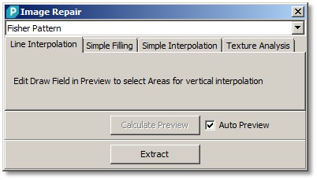
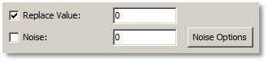
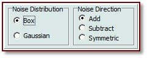
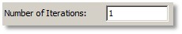
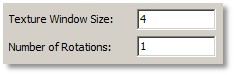
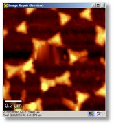
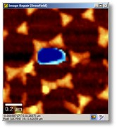

|
描述
图像修复对话框可用于使用不同的替换算法替换图像中不需要的像素或区域。
输入与结果
输入：
任意数量的图像数据对象。
结果：
修复后的图像数据对象。
用户界面
如果选择线插值选项卡，掩模预览窗口中掩模设置的区域将使用掩模区域上方和下方的线进行插值。

"Fisher Pattern"（组合框）：
如果放置了多个图像，您可以使用此组合框选择当前预览。
计算预览（按钮），自动预览（复选框）：
参见自动预览。
提取（按钮）：
计算并将修复后的图像提取到当前项目。
如果选择简单填充选项卡，掩模预览窗口中掩模设置的区域将使用给定值替换，并可添加一些随机噪声。

替换值（复选框和浮点编辑框）：
如果勾选，掩模区域将使用替换值替换。
噪声（复选框和浮点编辑框）：
如果勾选，替换值将带上给定噪声水平/强度的噪声。
噪声选项（按钮）：
打开噪声选项窗口：

噪声分布（单选按钮）：
在此您可以选择噪声分布（盒形或高斯噪声）。
噪声方向（单选按钮）：
在此您可以选择噪声"方向"，即非对称地添加/减去或对称添加噪声。
如果选择简单插值选项卡，掩模预览窗口中掩模设置的区域将使用简单的插值算法替换，该算法使用掩模区域的边界进行插值。

迭代次数（整数编辑框）：
设置插值的迭代次数。迭代次数越多，图像强度的过渡越平滑。
如果选择纹理分析选项卡，掩模预览窗口中掩模设置的区域将使用纹理分析算法替换，该算法使用同一图像中最适合待替换区域的区域。

纹理窗口大小（整数编辑框）：
定义用于搜索合适替换纹理的纹理窗口大小。
旋转次数（整数编辑框）：
定义寻找更合适替换纹理的旋转次数。这两个参数对计算时间有很大影响。

第一个预览图像查看器显示修复预览。

第二个预览图像查看器显示原始图像和掩模，可以更改掩模以定义哪些像素应被替换或修复。